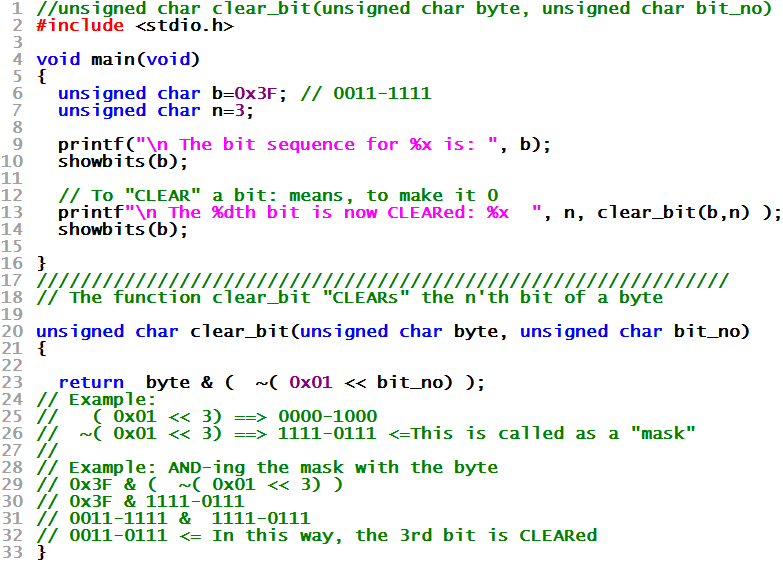

| WR Home Topic Home | Chapter: 1 2 3 |
| <Previous | Next> |
Chapter 03
Commonly used bit-manipulation functions
Page 4
Write a function clear_bit which will CLEAR (make it Zero) a particular bit in a byte (without disturbing other bits of the byte)
The solution is given below

| WR Home Topic Home | Chapter: 1 2 3 |
| <Previous | Next> |